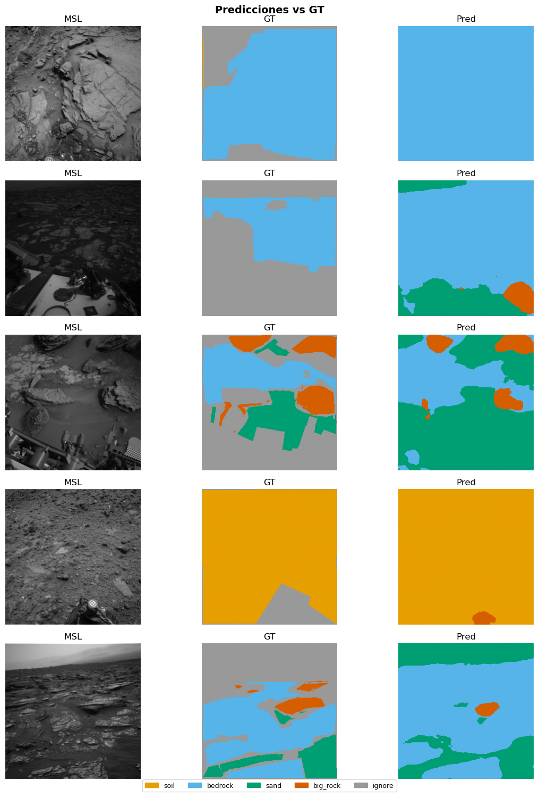

03d — TerSeg (Dual-Branch CNN + Swin Transformer)#
Paper: Fan et al., Expert Systems with Applications 270 (2025) 126397. DOI: 10.1016/j.eswa.2025.126397
0. Configuración#
import sys; sys.path.append('.')
import torch, torch.nn as nn, torch.nn.functional as F
import pandas as pd, numpy as np
from mars_utils_fast import (
set_seed, get_or_create_split, build_dataloaders,
run_multi_seed, append_benchmark_results,
visualize_predictions, count_parameters,
FocalLoss, NUM_CLASSES, IGNORE_INDEX
)
set_seed()
device = "cuda" if torch.cuda.is_available() else "cpu"
print(f"Device: {device}")
MODEL_NAME = "terseg"
try:
import timm
print(f"timm {timm.__version__} disponible")
except ImportError:
print("timm no instalado. Ejecuta: pip install timm")
Device: cuda
timm 1.0.26 disponible
1. Dataset#
df = pd.read_csv("processed/manifest_256.csv")
df_train, df_val, df_test = get_or_create_split(df)
train_loader, val_loader, test_loader = build_dataloaders(
df_train, df_val, df_test, batch_size=8, num_workers=0
)
✅ Split cargado desde processed\split_indices.pkl
Train: 16074 {'MSL': 15901, 'MER': 173}
Val : 3443 {'MSL': 3443}
Test : 3448 {'MSL': 3448}
2. Arquitectura TerSeg#
Dual-branch: Branch_C (ResNet-34) + Branch_T (Swin-Tiny). FL en etapas 1-2 (CNN domina), FG en etapas 3-4 (Transformer domina). Decoder FLGA con conv 3×3 final.
import torchvision.models as tvm
class FusionModule(nn.Module):
"""FL o FG: fusión ponderada learnable entre ramas CNN y Transformer."""
def __init__(self, cnn_ch, tr_ch, out_ch, cnn_dominant=True):
super().__init__()
self.cnn_proj = nn.Conv2d(cnn_ch, out_ch, 1, bias=False)
self.tr_proj = nn.Conv2d(tr_ch, out_ch, 1, bias=False)
# Pesos learnable inicializados según dominancia
init_cnn = 0.7 if cnn_dominant else 0.3
self.w_cnn = nn.Parameter(torch.tensor(init_cnn))
self.w_tr = nn.Parameter(torch.tensor(1.0 - init_cnn))
self.norm = nn.BatchNorm2d(out_ch)
self.relu = nn.ReLU(True)
def forward(self, r, t):
# Alinear resoluciones si difieren
if r.shape[-2:] != t.shape[-2:]:
t = F.interpolate(t, size=r.shape[-2:], mode='bilinear', align_corners=False)
return self.relu(self.norm(
self.w_cnn * self.cnn_proj(r) + self.w_tr * self.tr_proj(t)
))
class FLGA(nn.Module):
"""Focus on Local & Global Aggregation: upsampling progresivo + conv 3×3."""
def __init__(self, channels, num_classes):
super().__init__()
self.ups = nn.ModuleList()
self.convs= nn.ModuleList()
ch = channels
for i in range(len(ch)-1, 0, -1):
self.ups.append(nn.Sequential(
nn.Conv2d(ch[i], ch[i-1], 1, bias=False),
nn.BatchNorm2d(ch[i-1]), nn.ReLU(True)
))
self.convs.append(nn.Sequential(
nn.Conv2d(ch[i-1]*2, ch[i-1], 3, padding=1, bias=False),
nn.BatchNorm2d(ch[i-1]), nn.ReLU(True)
))
self.head = nn.Conv2d(ch[0], num_classes, 1)
def forward(self, features):
# features: [f1, f2, f3, f4] de menor a mayor escala espacial
x = features[-1]
skips = features[:-1][::-1]
for up, conv, skip in zip(self.ups, self.convs, skips):
x = up(x)
x = F.interpolate(x, size=skip.shape[-2:], mode='bilinear', align_corners=False)
x = conv(torch.cat([x, skip], dim=1))
return self.head(x)
class TerSeg(nn.Module):
"""
Dual-branch: Branch_C=ResNet34, Branch_T=Swin-Tiny.
Configuración TC_S: out_ch=64 para las 4 etapas de fusión.
~22M params, ~26G FLOPs.
"""
def __init__(self, num_classes=NUM_CLASSES, out_ch=64):
super().__init__()
# Branch C: ResNet-34
bb = tvm.resnet34(weights=tvm.ResNet34_Weights.DEFAULT)
self.c_stem = nn.Sequential(bb.conv1,bb.bn1,bb.relu,bb.maxpool)
self.c_layer1= bb.layer1 # 64ch, /4
self.c_layer2= bb.layer2 # 128ch, /8
self.c_layer3= bb.layer3 # 256ch, /16
self.c_layer4= bb.layer4 # 512ch, /32
# Branch T: Swin-Tiny via timm
self.swin = timm.create_model(
'swin_tiny_patch4_window7_224',
pretrained=True, features_only=True,
out_indices=(0,1,2,3)
)
swin_chs = self.swin.feature_info.channels() # [96,192,384,768]
# Fusión FL (etapas 1,2 — CNN domina)
self.fl1 = FusionModule(64, swin_chs[0], out_ch, cnn_dominant=True)
self.fl2 = FusionModule(128, swin_chs[1], out_ch, cnn_dominant=True)
# Fusión FG (etapas 3,4 — Transformer domina)
self.fg3 = FusionModule(256, swin_chs[2], out_ch, cnn_dominant=False)
self.fg4 = FusionModule(512, swin_chs[3], out_ch, cnn_dominant=False)
# Decoder FLGA
self.flga = FLGA([out_ch]*4, num_classes)
def forward(self, x):
# Branch C
c0 = self.c_stem(x)
r1 = self.c_layer1(c0)
r2 = self.c_layer2(r1)
r3 = self.c_layer3(r2)
r4 = self.c_layer4(r3)
# Branch T (Swin espera múltiplo de 32)
x_swin = F.interpolate(x, size=(224,224), mode='bilinear', align_corners=False)
t_feats = self.swin(x_swin)
t1,t2,t3,t4 = [f.permute(0,3,1,2) if f.dim()==4 else f for f in t_feats]
# Fusión
f1 = self.fl1(r1, t1)
f2 = self.fl2(r2, t2)
f3 = self.fg3(r3, t3)
f4 = self.fg4(r4, t4)
out = self.flga([f1,f2,f3,f4])
return F.interpolate(out, size=x.shape[-2:], mode='bilinear', align_corners=False)
def build_terseg():
return TerSeg(NUM_CLASSES)
model = build_terseg().to(device)
params_M = count_parameters(model)
print(f"Parámetros: {params_M:.2f}M")
with torch.no_grad():
dummy = torch.randn(2,3,256,256).to(device)
print(f"Output: {model(dummy).shape}")
Parámetros: 49.19M
Output: torch.Size([2, 4, 256, 256])
3. Entrenamiento (3 seeds)#
Adam + ReduceLROnPlateau, Focal Loss
import torch.optim as optim
def criterion_fn():
return FocalLoss(alpha=0.25, gamma=2.0, ignore_index=IGNORE_INDEX)
def optimizer_fn(params):
return optim.Adam(params, lr=1e-4)
def scheduler_fn(opt):
return optim.lr_scheduler.ReduceLROnPlateau(opt, mode='max', patience=5, factor=0.5)
summary = run_multi_seed(
model_fn=build_terseg,
df_train=df_train, df_val=df_val, df_test=df_test,
criterion_fn=criterion_fn, optimizer_fn=optimizer_fn, scheduler_fn=scheduler_fn,
model_name=MODEL_NAME, device=device,
seeds=[42,123,7], num_epochs=80, patience=10, batch_size=10, num_workers=6, n_per_mission=700
)
──────────────────────────────────────────────────
Seed 42 | terseg
c:\Users\User\Documents\DeepLearning\ai4mars-dataset-merged-0.6\mars_utils_fast.py:139: FutureWarning: DataFrameGroupBy.apply operated on the grouping columns. This behavior is deprecated, and in a future version of pandas the grouping columns will be excluded from the operation. Either pass `include_groups=False` to exclude the groupings or explicitly select the grouping columns after groupby to silence this warning.
df.groupby("mission", group_keys=False)
c:\Users\User\Documents\DeepLearning\ai4mars-dataset-merged-0.6\mars_utils_fast.py:139: FutureWarning: DataFrameGroupBy.apply operated on the grouping columns. This behavior is deprecated, and in a future version of pandas the grouping columns will be excluded from the operation. Either pass `include_groups=False` to exclude the groupings or explicitly select the grouping columns after groupby to silence this warning.
df.groupby("mission", group_keys=False)
=======================================================
terseg_seed42 | device=cuda | AMP=True
=======================================================
Ep 1/80 | loss=0.0863 mIoU=0.4611 | val=0.5663 | rock=0.0208
Ep 2/80 | loss=0.0564 mIoU=0.5384 | val=0.6271 | rock=0.0152
Ep 3/80 | loss=0.0374 mIoU=0.5961 | val=0.6434 | rock=0.0041
Ep 4/80 | loss=0.0374 mIoU=0.5980 | val=0.6198 | rock=0.0268
Ep 5/80 | loss=0.0326 mIoU=0.6252 | val=0.7044 | rock=0.2683
Ep 6/80 | loss=0.0288 mIoU=0.6404 | val=0.6421 | rock=0.0669
Ep 7/80 | loss=0.0260 mIoU=0.6691 | val=0.7127 | rock=0.4078
Ep 8/80 | loss=0.0229 mIoU=0.7154 | val=0.7854 | rock=0.5201
Ep 9/80 | loss=0.0246 mIoU=0.7025 | val=0.6473 | rock=0.0390
Ep 10/80 | loss=0.0235 mIoU=0.6780 | val=0.7959 | rock=0.5121
Ep 11/80 | loss=0.0172 mIoU=0.7575 | val=0.7328 | rock=0.2860
Ep 12/80 | loss=0.0181 mIoU=0.7561 | val=0.8001 | rock=0.5352
Ep 13/80 | loss=0.0160 mIoU=0.7799 | val=0.8188 | rock=0.5427
Ep 14/80 | loss=0.0154 mIoU=0.7737 | val=0.7432 | rock=0.3138
Ep 15/80 | loss=0.0175 mIoU=0.7603 | val=0.7804 | rock=0.5018
Ep 16/80 | loss=0.0206 mIoU=0.7494 | val=0.7976 | rock=0.5455
Ep 17/80 | loss=0.0136 mIoU=0.7827 | val=0.7940 | rock=0.5344
Ep 18/80 | loss=0.0135 mIoU=0.7897 | val=0.7512 | rock=0.4248
Ep 19/80 | loss=0.0139 mIoU=0.8057 | val=0.8500 | rock=0.6381
Ep 20/80 | loss=0.0097 mIoU=0.8152 | val=0.7749 | rock=0.5462
Ep 21/80 | loss=0.0208 mIoU=0.7313 | val=0.8024 | rock=0.5550
Ep 22/80 | loss=0.0142 mIoU=0.7650 | val=0.8174 | rock=0.5949
Ep 23/80 | loss=0.0097 mIoU=0.8181 | val=0.8283 | rock=0.5757
Ep 24/80 | loss=0.0089 mIoU=0.8165 | val=0.8539 | rock=0.6350
Ep 25/80 | loss=0.0109 mIoU=0.7960 | val=0.8216 | rock=0.5342
Ep 26/80 | loss=0.0084 mIoU=0.8211 | val=0.8244 | rock=0.5889
Ep 27/80 | loss=0.0083 mIoU=0.8374 | val=0.8284 | rock=0.5612
Ep 28/80 | loss=0.0067 mIoU=0.8519 | val=0.8455 | rock=0.6466
Ep 29/80 | loss=0.0085 mIoU=0.8596 | val=0.6208 | rock=0.5047
Ep 30/80 | loss=0.0103 mIoU=0.8408 | val=0.8629 | rock=0.6880
Ep 31/80 | loss=0.0124 mIoU=0.8179 | val=0.7803 | rock=0.4269
Ep 32/80 | loss=0.0091 mIoU=0.8188 | val=0.8261 | rock=0.5986
Ep 33/80 | loss=0.0093 mIoU=0.8182 | val=0.7600 | rock=0.3079
Ep 34/80 | loss=0.0074 mIoU=0.8269 | val=0.8366 | rock=0.5871
Ep 35/80 | loss=0.0097 mIoU=0.8376 | val=0.7946 | rock=0.4642
Ep 36/80 | loss=0.0083 mIoU=0.8208 | val=0.7854 | rock=0.5219
Ep 37/80 | loss=0.0072 mIoU=0.8668 | val=0.8357 | rock=0.5782
Ep 38/80 | loss=0.0052 mIoU=0.8892 | val=0.8509 | rock=0.6347
Ep 39/80 | loss=0.0052 mIoU=0.8909 | val=0.8356 | rock=0.6147
Ep 40/80 | loss=0.0054 mIoU=0.9098 | val=0.8488 | rock=0.6541
Early stopping en epoch 40
Mejor val mIoU=0.8629 (epoch 30) | 570s
Test mIoU=0.7476
──────────────────────────────────────────────────
Seed 123 | terseg
c:\Users\User\Documents\DeepLearning\ai4mars-dataset-merged-0.6\mars_utils_fast.py:139: FutureWarning: DataFrameGroupBy.apply operated on the grouping columns. This behavior is deprecated, and in a future version of pandas the grouping columns will be excluded from the operation. Either pass `include_groups=False` to exclude the groupings or explicitly select the grouping columns after groupby to silence this warning.
df.groupby("mission", group_keys=False)
c:\Users\User\Documents\DeepLearning\ai4mars-dataset-merged-0.6\mars_utils_fast.py:139: FutureWarning: DataFrameGroupBy.apply operated on the grouping columns. This behavior is deprecated, and in a future version of pandas the grouping columns will be excluded from the operation. Either pass `include_groups=False` to exclude the groupings or explicitly select the grouping columns after groupby to silence this warning.
df.groupby("mission", group_keys=False)
=======================================================
terseg_seed123 | device=cuda | AMP=True
=======================================================
Ep 1/80 | loss=0.0879 mIoU=0.4635 | val=0.6024 | rock=0.0904
Ep 2/80 | loss=0.0527 mIoU=0.5675 | val=0.7050 | rock=0.3004
Ep 3/80 | loss=0.0445 mIoU=0.5856 | val=0.6566 | rock=0.0267
Ep 4/80 | loss=0.0331 mIoU=0.6183 | val=0.6473 | rock=0.1862
Ep 5/80 | loss=0.0293 mIoU=0.6774 | val=0.6700 | rock=0.0286
Ep 6/80 | loss=0.0242 mIoU=0.6877 | val=0.7228 | rock=0.1949
Ep 7/80 | loss=0.0237 mIoU=0.7103 | val=0.6341 | rock=0.0419
Ep 8/80 | loss=0.0230 mIoU=0.7051 | val=0.7401 | rock=0.3205
Ep 9/80 | loss=0.0195 mIoU=0.7289 | val=0.8091 | rock=0.5484
Ep 10/80 | loss=0.0223 mIoU=0.7181 | val=0.7880 | rock=0.4417
Ep 11/80 | loss=0.0178 mIoU=0.7398 | val=0.7387 | rock=0.2273
Ep 12/80 | loss=0.0192 mIoU=0.7486 | val=0.6839 | rock=0.2567
Ep 13/80 | loss=0.0166 mIoU=0.7464 | val=0.7981 | rock=0.4919
Ep 14/80 | loss=0.0147 mIoU=0.7902 | val=0.7551 | rock=0.3098
Ep 15/80 | loss=0.0162 mIoU=0.7836 | val=0.8033 | rock=0.5438
Ep 16/80 | loss=0.0110 mIoU=0.7977 | val=0.8189 | rock=0.5550
Ep 17/80 | loss=0.0095 mIoU=0.8260 | val=0.8491 | rock=0.6434
Ep 18/80 | loss=0.0100 mIoU=0.8435 | val=0.8416 | rock=0.6068
Ep 19/80 | loss=0.0089 mIoU=0.8456 | val=0.8531 | rock=0.6424
Ep 20/80 | loss=0.0072 mIoU=0.8430 | val=0.8238 | rock=0.5981
Ep 21/80 | loss=0.0082 mIoU=0.8686 | val=0.8284 | rock=0.6014
Ep 22/80 | loss=0.0074 mIoU=0.8633 | val=0.8134 | rock=0.5483
Ep 23/80 | loss=0.0080 mIoU=0.8551 | val=0.8253 | rock=0.5781
Ep 24/80 | loss=0.0063 mIoU=0.8924 | val=0.8059 | rock=0.5300
Ep 25/80 | loss=0.0066 mIoU=0.8452 | val=0.8477 | rock=0.6682
Ep 26/80 | loss=0.0066 mIoU=0.8943 | val=0.8374 | rock=0.6060
Ep 27/80 | loss=0.0059 mIoU=0.8901 | val=0.8652 | rock=0.6633
Ep 28/80 | loss=0.0053 mIoU=0.8881 | val=0.8612 | rock=0.6547
Ep 29/80 | loss=0.0054 mIoU=0.9048 | val=0.8562 | rock=0.6393
Ep 30/80 | loss=0.0055 mIoU=0.9007 | val=0.8665 | rock=0.6692
Ep 31/80 | loss=0.0052 mIoU=0.9057 | val=0.8639 | rock=0.6701
Ep 32/80 | loss=0.0067 mIoU=0.9033 | val=0.8459 | rock=0.6152
Ep 33/80 | loss=0.0044 mIoU=0.9211 | val=0.8555 | rock=0.6394
Ep 34/80 | loss=0.0041 mIoU=0.9070 | val=0.8650 | rock=0.6594
Ep 35/80 | loss=0.0044 mIoU=0.9039 | val=0.8687 | rock=0.6676
Ep 36/80 | loss=0.0060 mIoU=0.8914 | val=0.8721 | rock=0.6864
Ep 37/80 | loss=0.0049 mIoU=0.9179 | val=0.8678 | rock=0.6684
Ep 38/80 | loss=0.0041 mIoU=0.8945 | val=0.8546 | rock=0.6244
Ep 39/80 | loss=0.0043 mIoU=0.9086 | val=0.8513 | rock=0.5837
Ep 40/80 | loss=0.0040 mIoU=0.9117 | val=0.8538 | rock=0.6271
Ep 41/80 | loss=0.0038 mIoU=0.9248 | val=0.8621 | rock=0.6577
Ep 42/80 | loss=0.0033 mIoU=0.9312 | val=0.8652 | rock=0.6616
Ep 43/80 | loss=0.0034 mIoU=0.9196 | val=0.8657 | rock=0.6676
Ep 44/80 | loss=0.0035 mIoU=0.9294 | val=0.8611 | rock=0.6492
Ep 45/80 | loss=0.0029 mIoU=0.9292 | val=0.8604 | rock=0.6429
Ep 46/80 | loss=0.0035 mIoU=0.9121 | val=0.8611 | rock=0.6291
Early stopping en epoch 46
Mejor val mIoU=0.8721 (epoch 36) | 688s
Test mIoU=0.7617
──────────────────────────────────────────────────
Seed 7 | terseg
c:\Users\User\Documents\DeepLearning\ai4mars-dataset-merged-0.6\mars_utils_fast.py:139: FutureWarning: DataFrameGroupBy.apply operated on the grouping columns. This behavior is deprecated, and in a future version of pandas the grouping columns will be excluded from the operation. Either pass `include_groups=False` to exclude the groupings or explicitly select the grouping columns after groupby to silence this warning.
df.groupby("mission", group_keys=False)
c:\Users\User\Documents\DeepLearning\ai4mars-dataset-merged-0.6\mars_utils_fast.py:139: FutureWarning: DataFrameGroupBy.apply operated on the grouping columns. This behavior is deprecated, and in a future version of pandas the grouping columns will be excluded from the operation. Either pass `include_groups=False` to exclude the groupings or explicitly select the grouping columns after groupby to silence this warning.
df.groupby("mission", group_keys=False)
=======================================================
terseg_seed7 | device=cuda | AMP=True
=======================================================
Ep 1/80 | loss=0.0911 mIoU=0.4638 | val=0.6284 | rock=0.0326
Ep 2/80 | loss=0.0487 mIoU=0.5772 | val=0.6275 | rock=0.0102
Ep 3/80 | loss=0.0392 mIoU=0.5959 | val=0.6686 | rock=0.0325
Ep 4/80 | loss=0.0335 mIoU=0.6253 | val=0.5705 | rock=0.0612
Ep 5/80 | loss=0.0321 mIoU=0.6281 | val=0.7124 | rock=0.1874
Ep 6/80 | loss=0.0353 mIoU=0.5957 | val=0.7320 | rock=0.3102
Ep 7/80 | loss=0.0257 mIoU=0.6705 | val=0.7362 | rock=0.4686
Ep 8/80 | loss=0.0252 mIoU=0.6676 | val=0.7083 | rock=0.3355
Ep 9/80 | loss=0.0185 mIoU=0.6967 | val=0.7070 | rock=0.1878
Ep 10/80 | loss=0.0188 mIoU=0.7337 | val=0.7472 | rock=0.3982
Ep 11/80 | loss=0.0182 mIoU=0.7421 | val=0.7709 | rock=0.4062
Ep 12/80 | loss=0.0176 mIoU=0.7119 | val=0.7273 | rock=0.2759
Ep 13/80 | loss=0.0208 mIoU=0.7320 | val=0.7508 | rock=0.3886
Ep 14/80 | loss=0.0132 mIoU=0.7769 | val=0.8104 | rock=0.5507
Ep 15/80 | loss=0.0155 mIoU=0.7801 | val=0.7879 | rock=0.4482
Ep 16/80 | loss=0.0103 mIoU=0.8287 | val=0.8290 | rock=0.5747
Ep 17/80 | loss=0.0107 mIoU=0.8101 | val=0.8547 | rock=0.6400
Ep 18/80 | loss=0.0114 mIoU=0.8098 | val=0.8055 | rock=0.5599
Ep 19/80 | loss=0.0097 mIoU=0.8137 | val=0.8285 | rock=0.6022
Ep 20/80 | loss=0.0124 mIoU=0.7973 | val=0.8478 | rock=0.6237
Ep 21/80 | loss=0.0130 mIoU=0.8076 | val=0.8040 | rock=0.5979
Ep 22/80 | loss=0.0194 mIoU=0.7595 | val=0.7651 | rock=0.3985
Ep 23/80 | loss=0.0208 mIoU=0.7495 | val=0.7412 | rock=0.4711
Ep 24/80 | loss=0.0095 mIoU=0.8552 | val=0.8473 | rock=0.6555
Ep 25/80 | loss=0.0080 mIoU=0.8412 | val=0.8495 | rock=0.6224
Ep 26/80 | loss=0.0084 mIoU=0.8539 | val=0.8405 | rock=0.5701
Ep 27/80 | loss=0.0073 mIoU=0.8665 | val=0.8123 | rock=0.5306
Early stopping en epoch 27
Mejor val mIoU=0.8547 (epoch 17) | 415s
Test mIoU=0.7401
=======================================================
terseg: mIoU=0.7498±0.0089 IC95=±0.0101
IoU(soil)=0.9234±0.0026
IoU(bedrock)=0.9307±0.0015
IoU(sand)=0.8448±0.0115
IoU(big_rock)=0.3003±0.0261
=======================================================
4. Guardado y Visualización#
append_benchmark_results(
model_name=MODEL_NAME, best_epoch=summary["best_epoch_mean"],
val_miou=summary["mIoU_mean"], test_miou=summary["mIoU_mean"],
test_miou_std=summary["mIoU_std"], test_miou_ci95=summary["mIoU_ci95"],
test_acc=summary["pixel_acc_mean"],
iou_soil=summary["iou_soil_mean"], iou_bedrock=summary["iou_bedrock_mean"],
iou_sand=summary["iou_sand_mean"], iou_bigrock=summary["iou_big_rock_mean"],
params_M=params_M, train_time_s=summary["train_time_mean"],
)
best_model = build_terseg().to(device)
ckpt = torch.load(f"checkpoints/{MODEL_NAME}_seed42_best.pth", map_location=device)
best_model.load_state_dict(ckpt["model_state"])
visualize_predictions(best_model, df_test, device, n=5, save_path=f"results/{MODEL_NAME}_predictions.png")
print(f"mIoU: {summary['mIoU_mean']:.4f} ± {summary['mIoU_std']:.4f}")
✅ Resultados en results\benchmark_results.csv
C:\Users\User\AppData\Local\Temp\ipykernel_12352\3336393090.py:11: FutureWarning: You are using `torch.load` with `weights_only=False` (the current default value), which uses the default pickle module implicitly. It is possible to construct malicious pickle data which will execute arbitrary code during unpickling (See https://github.com/pytorch/pytorch/blob/main/SECURITY.md#untrusted-models for more details). In a future release, the default value for `weights_only` will be flipped to `True`. This limits the functions that could be executed during unpickling. Arbitrary objects will no longer be allowed to be loaded via this mode unless they are explicitly allowlisted by the user via `torch.serialization.add_safe_globals`. We recommend you start setting `weights_only=True` for any use case where you don't have full control of the loaded file. Please open an issue on GitHub for any issues related to this experimental feature.
ckpt = torch.load(f"checkpoints/{MODEL_NAME}_seed42_best.pth", map_location=device)

✅ results/terseg_predictions.png
mIoU: 0.7498 ± 0.0089